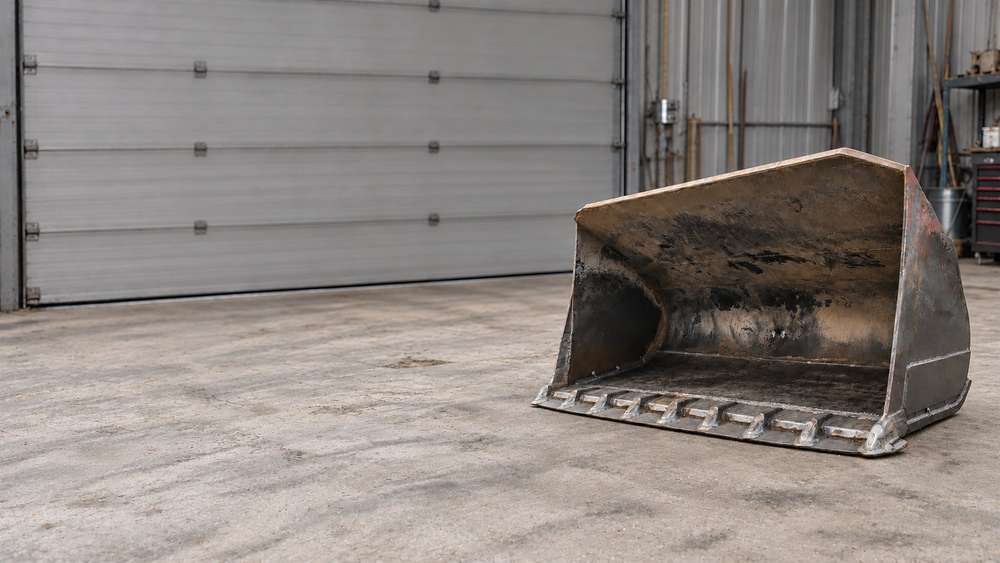
Własny warsztat 1000 m² w Krakowie. Dojazd do klienta w całej Polsce 24/7
Naprawa dna i ścian bocznych, wymiana krawędzi tnącej, odbudowa mocowań i wzmocnienie konstrukcji pod dalszą pracę z dużym obciążeniem
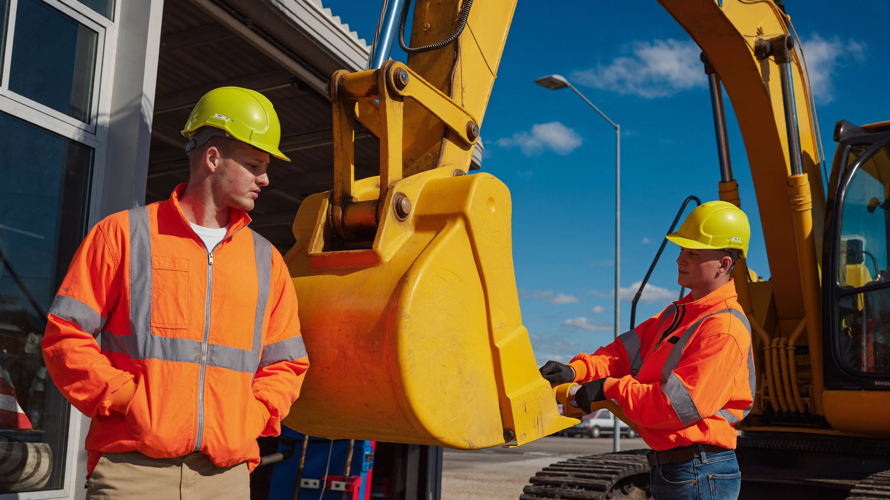
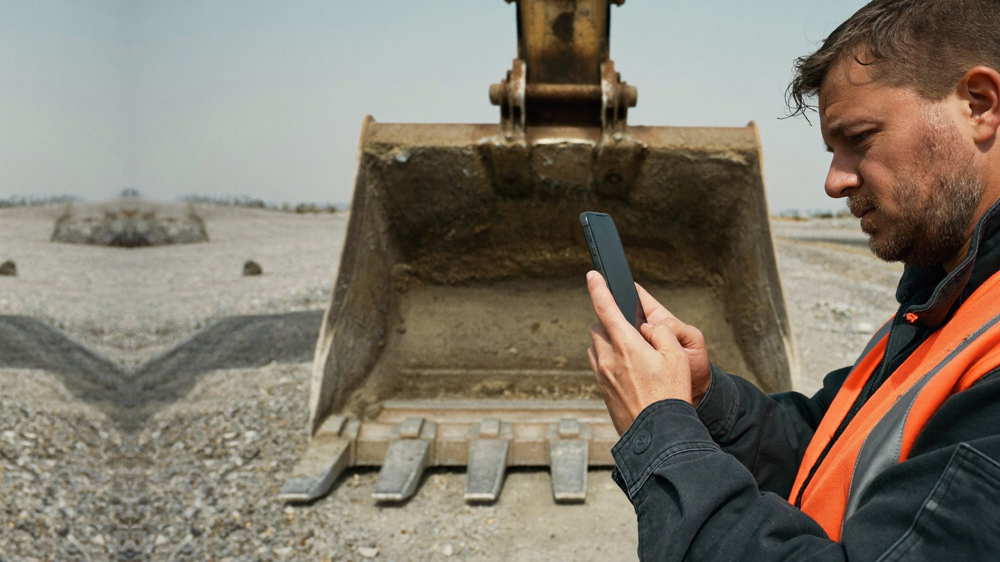
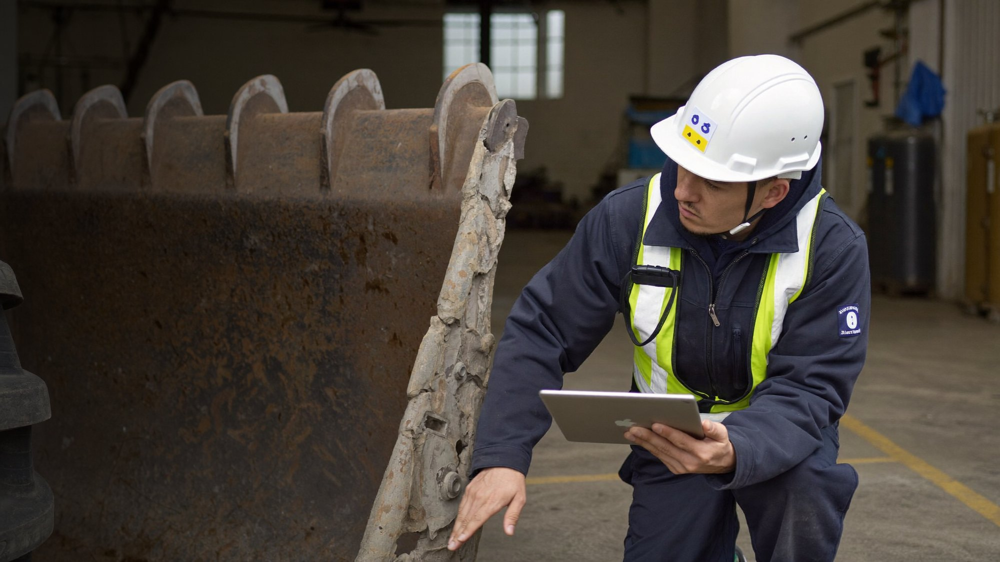
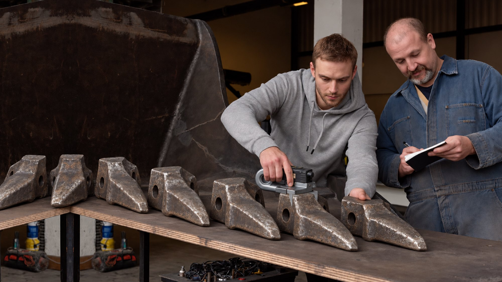
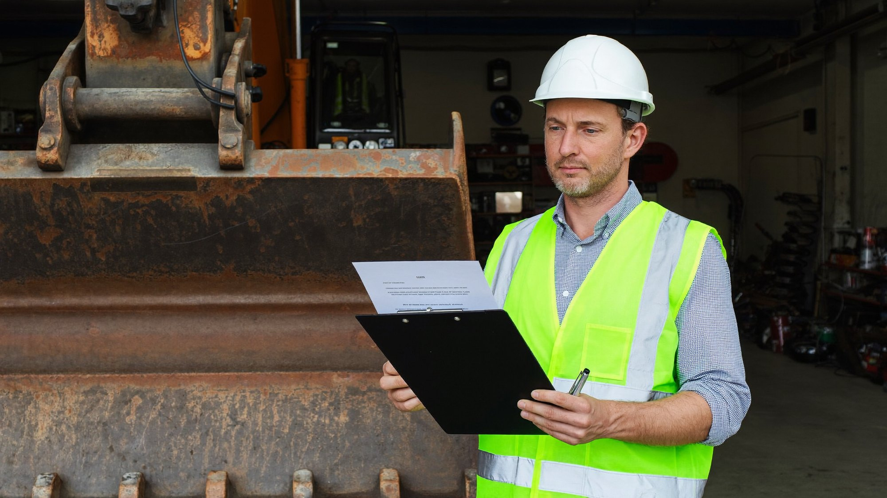
Sprawdzamy aktualną cenę nowej i używanej łyżki do Twojej maszyny. Porównujemy oferty rynkowe, żeby poznać realny koszt wymiany. Ta cena to punkt odniesienia: naprawa musi mieć sens ekonomiczny
Sprawdzamy stan metalu, geometrię, krawędź tnącą, mocowania i inne elementy. Ustalamy, co naprawdę wymaga regeneracji, a co ma jeszcze zapas żywotności. Nie dodajemy do wyceny prac, których nie potrzebujesz
Liczymy potrzebną stal, materiały eksploatacyjne i zakres prac. Przed startem znasz jasną cenę regeneracji. Z góry wiesz, jaki jest budżet, i możesz go porównać z ceną nowej łyżki
Pokazujemy dwie liczby: ile kosztuje regeneracja Twojej łyżki i ile kosztowałaby wymiana. Jeśli naprawa się nie opłaca, powiemy to wprost. Wybierasz wariant korzystniejszy dla maszyny i firmy
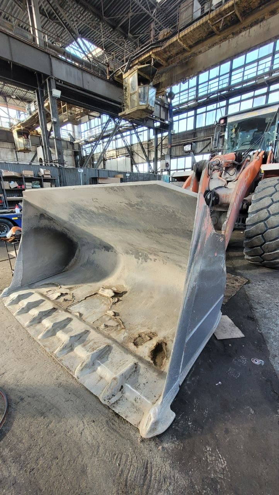
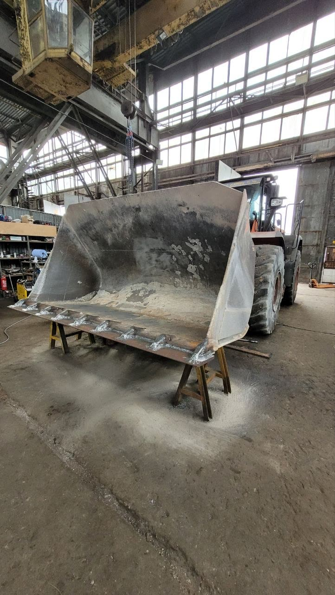
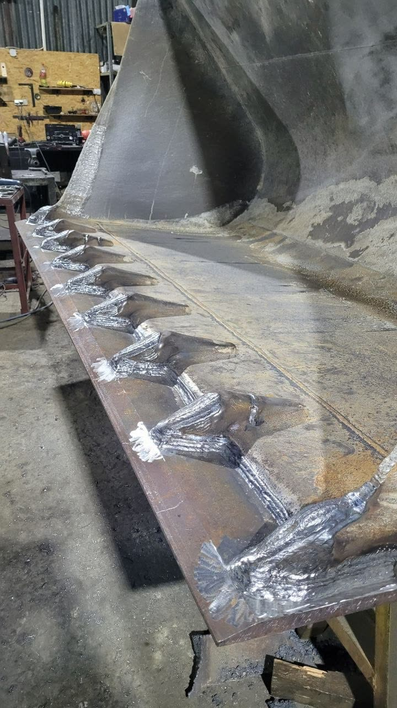
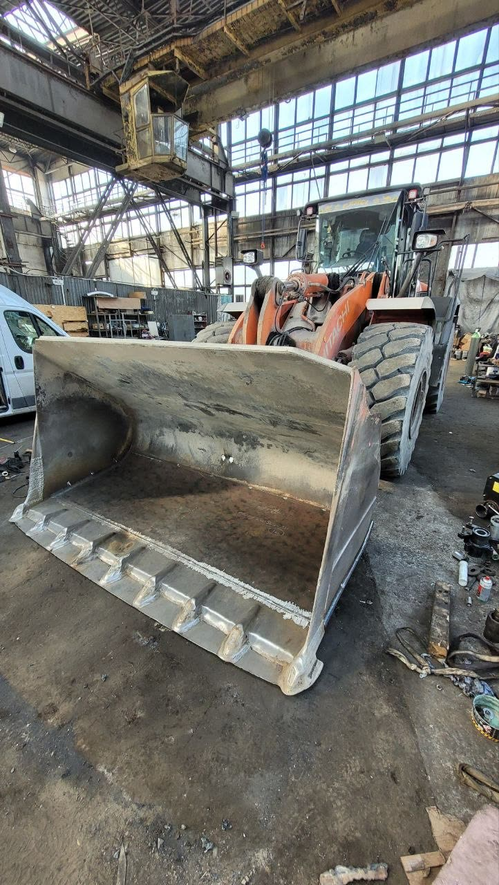
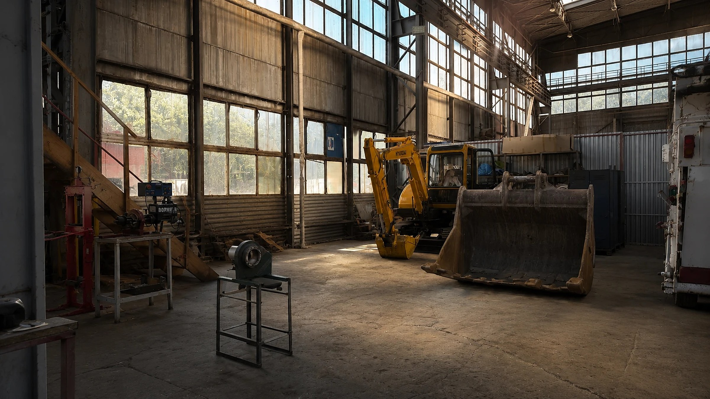
Odezwiemy się w ciągu godziny, poprosimy o zdjęcia łyżki i dane maszyny i przygotujemy dokładną wycenę naprawy
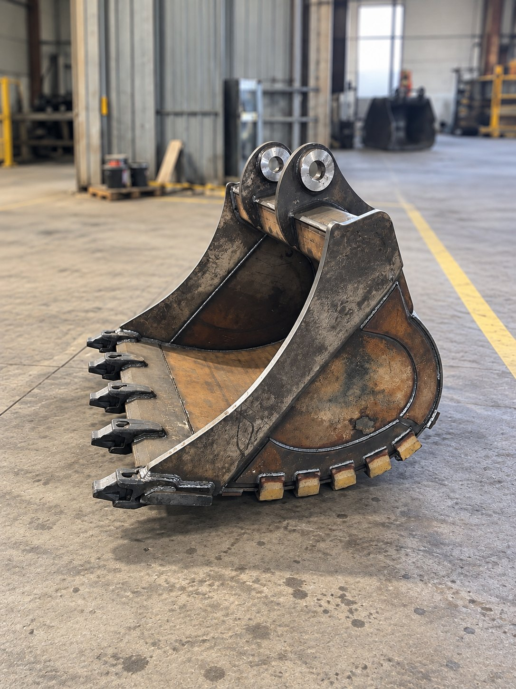